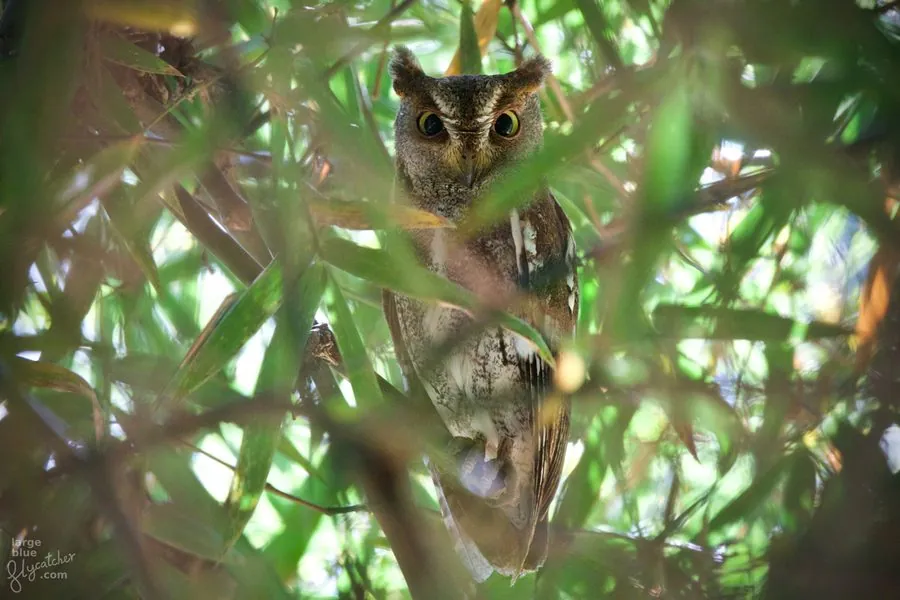

鸟类 · 动物界
红角鸮 Otus sunia

中国最小的猫头鹰之一，体长不足二十厘米，分灰色与棕红色两种色型。北方种群每年南迁越冬，夜间以三连音鸣叫。
- 分类
- 门脊索动物门纲鸟纲目鸮形目科鸱鸮科属角鸮属
- 栖息环境
- 低山阔叶林、混交林、竹林、果园、公园与村落绿地，偏好有树洞的老树。
- 地理分布
- 繁殖于东亚、中亚至南亚北部；中国北方种群越冬于华南及东南亚，南方种群为留鸟。
- 保护级别
- IUCN 红色名录列为无危（LC）；中国国家二级保护野生动物，列入 CITES 附录二。
物种志
红角鸮体长仅十七至二十一厘米，体重六十至一百一十克，雌鸟略大。头顶有短耳羽簇，面盘边缘深色；羽色分灰色型与棕红色型，上体密布黑色虫蠹斑和浅色横纹，肩部有一列白色斑点，下体具黑色纵纹。虹膜黄色，嘴灰黑，脚灰褐色。与领角鸮相比，它体型更小、虹膜更黄、耳羽簇更短。
它栖息于低山阔叶林、混交林、竹林、果园与公园，白天隐藏在树冠或竹丛中，夜间捕食蛾类、甲虫、蟋蟀等昆虫，也吃小型脊椎动物。繁殖期在树洞中营巢，每窝产卵二至四枚。鸣声为短促的三连音“科—科—科”，音调渐降，夜间可反复鸣叫数百次。红角鸮在亚洲东部广泛繁殖，中国北方种群为夏候鸟，秋季南迁至华南、东南亚越冬，南方种群则多为留鸟。
形态与习性
- 体长17–21 厘米
- 体重60–110 克
- 羽色灰色型与棕红色型两种色型
- 食性蛾类、甲虫、蟋蟀等昆虫
- 繁殖树洞营巢，每窝 2–4 枚
- 保护级别国家二级；CITES 附录二
趣味知识
- 是中国体型最小的鸮类之一，可停歇在成人手掌上。
- 棕红色型通体锈红，与灰色型判若两种鸟。
- 鸣声为音调渐降的三连音，夏夜常整夜回响。